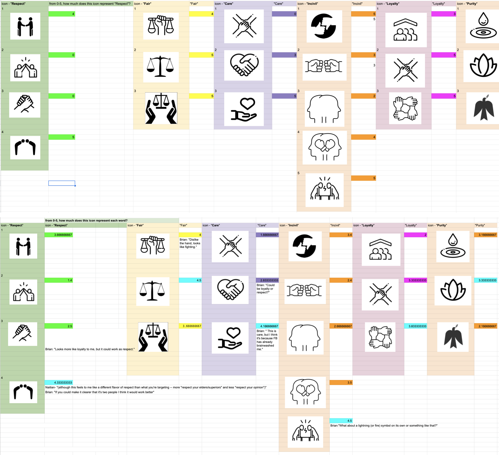
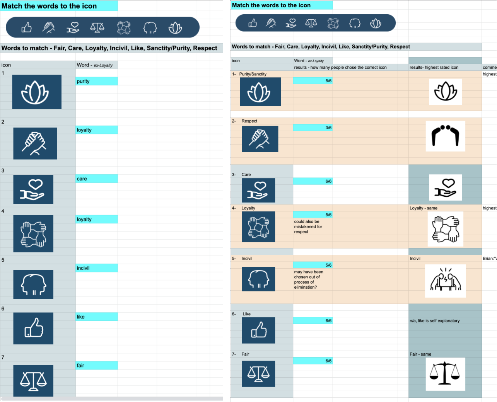
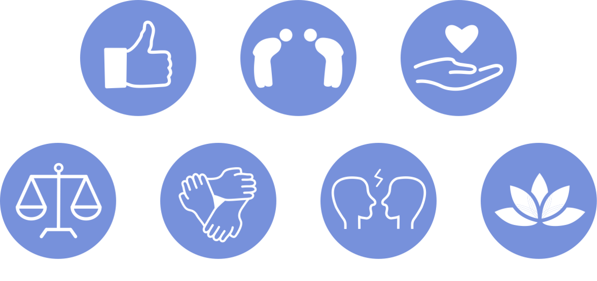
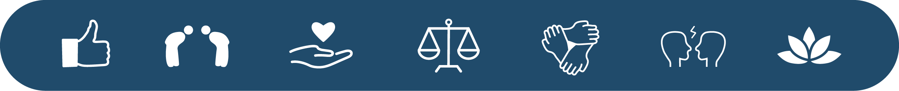
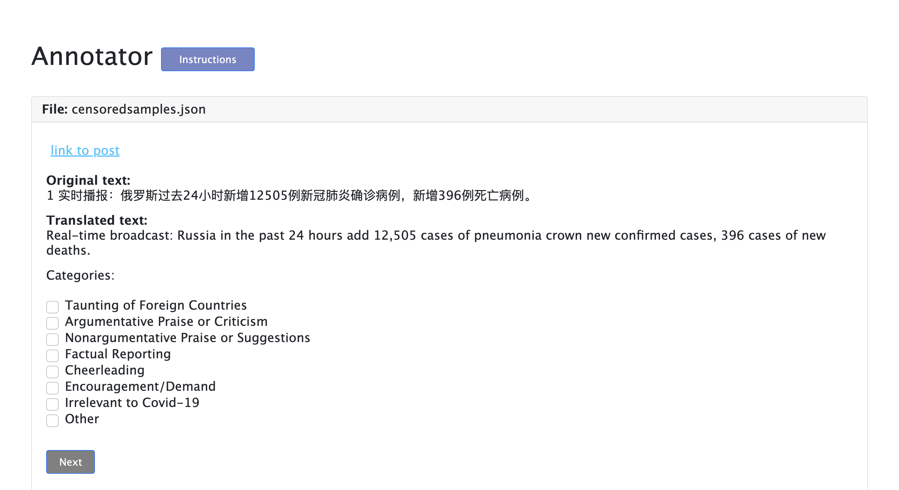
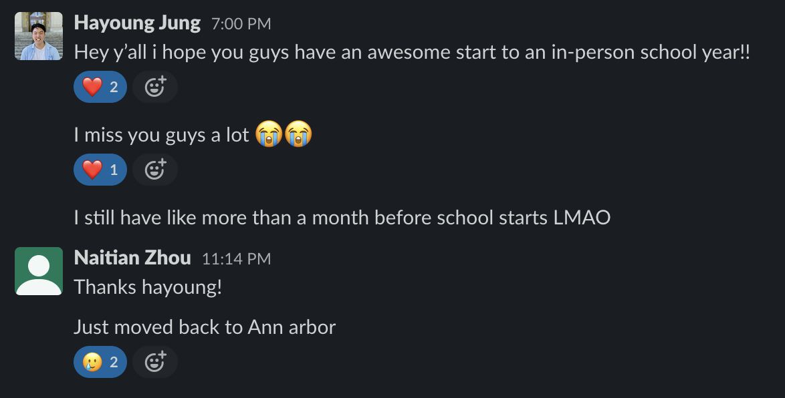

In the summer of 2021, I had the opportunity to work as a research assistant at the University of Washington's iSchool's Social Computing Lab under
Professor Tanushree Mitra.
There, I worked mainly on two projects. The first one regarded developing a news platform and redesigning icon
button labels for improving political online discourse.
The second project, Minerva, was about Covid-19 related social media posts on government-controlled social media platform, Weibo, and how
these posts can be framed in different ways depending on topic/which country mentioned.
News Platform
I started the development of a news platform to conduct studies on how the introduction of button labels other than "Like"
can change the way users converse about political news. I also designed the button labels on the platform.
Overview - The "Like" Button can be Unproductive
"Like" vs "Dislike" (or just not liking at all) is very black or white - it can leave no space in between for conversation, and can lead to polarization
Tragedies, death and destruction - "Liking" topics like these could be insensitive, and does not lead to anything that can gather a community, or create discussion like other words can potentially do, like a button label called "Care" can
Introducing buttons that match one's moral judgement can bring the possibility of removing incivility and bring moral engagement in conversations, and understand each other in a better way (Winerman, 2016)
Why Else is this Design Important?
"The more people use and rely upon social networking sites, such as Facebook, the higher their rates of civic and political participation"( Zúñiga et al., 2012).
The more people choose the buttons on news articles and comments, the more exposure and highlight it can get.
Different stories could be framed a certain way through even the most simplest of tweaks in words (Stroud et al., 2013)
Because we know this, the addition of button labels can have the possibility of changing the nature of political conversations in social media, and
facilitate more productive, civil conversations
Approach
Surveys
Mini Experiments, Interviews
Iterations
Respect, Fair, Care, Incivil, Purity, Sanctity
These words were gathered from the Stereotype Content Model (SCM) and Moral Foundations Theory (MFT) - Social theories in psychology
that displays the moral values and judgments of people on topics (Graham J, 2009).
These words were meant to represent and look into the viewpoints of both the political left and right.
Process
Empathasize -> Ideate -> Prototype -> Test -> Develop
Survey
Compiled images and asked particpants to rate 0-5 how much each image fit the word label

Test
Asked participants to match each icon with the word, looked at which icons gave errors, went back to design

Prototype, Final


Develop Check out news platform here
Shortcomings and Next Steps
Because the time frame was short, I made the most out of the time I had - designing the icons was only one component in my task of developing the news platform. It was definitely my favorite part though!
If my time frame was longer, I would have...
Gone more in-depth with researching icons and symbols
Gone through more iterations in the design process
Thought more deeply about how some people might be hindered, confused,
or frustrated by usage of the icon symbols due to the different barriers that exist,
including cultural, social, political, and more.
Minerva
The second part of my research experience at the University of Washington included examining
Covid-19 related social media posts on the Chinese social media platform, Weibo. News companies
are government-controlled, and we looked at how their Weibo posts framed, worded, and toned
when talking about Covid-19 in their country as well as outside countries.
Some things I did:
Created script in Python to detect Covid-19 related posts written by news sources on Weibo
Created script to use Google Cloud Transate API to translate batches of social media posts on Weibo
Retrieved random samples of Weibo posts and annotated them accordingly
Developed annotator app in Node JS for annotating/organizing social media posts see annotation app

Things I've Learned from my DUB REU Experience
Always create with intention, and think deeply about the things that are created, designed, and put out in technology.
Think about ways that products can or cannot promote a productive, inclusive and healthy space for everyone.
Don't be afraid to ask questions and things that you don't know! That is how we grow and learn.
Meaningful connections can actually be built through remote internships.
Naitian and Hayoung, if you're reading this, I am thinking of you from miles away!
Thank you for being there with me at the early standups, Friday "coffee sessions", and just
being relatable when imposter syndrome was hitting.
